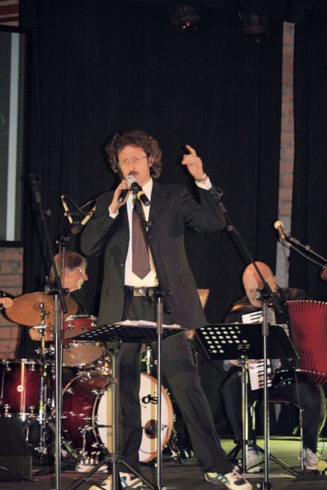
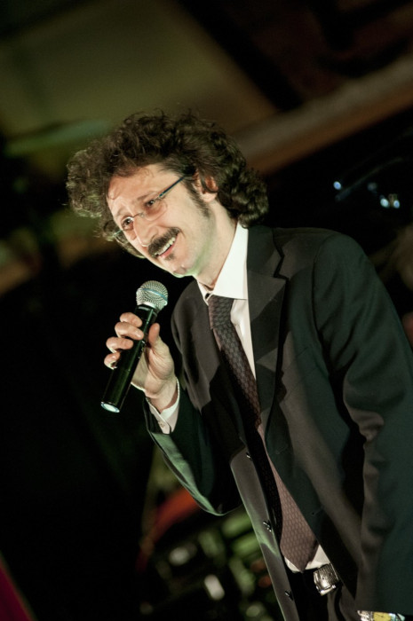

Forse l'artista più Jannacciano, nelle movenze e nella presenza scenica, insuperabile in quei brani caratteristici della realtà milanese e di un ambiente popolare, come in “Andava a Rogoredo”, o "l'Armando" 
